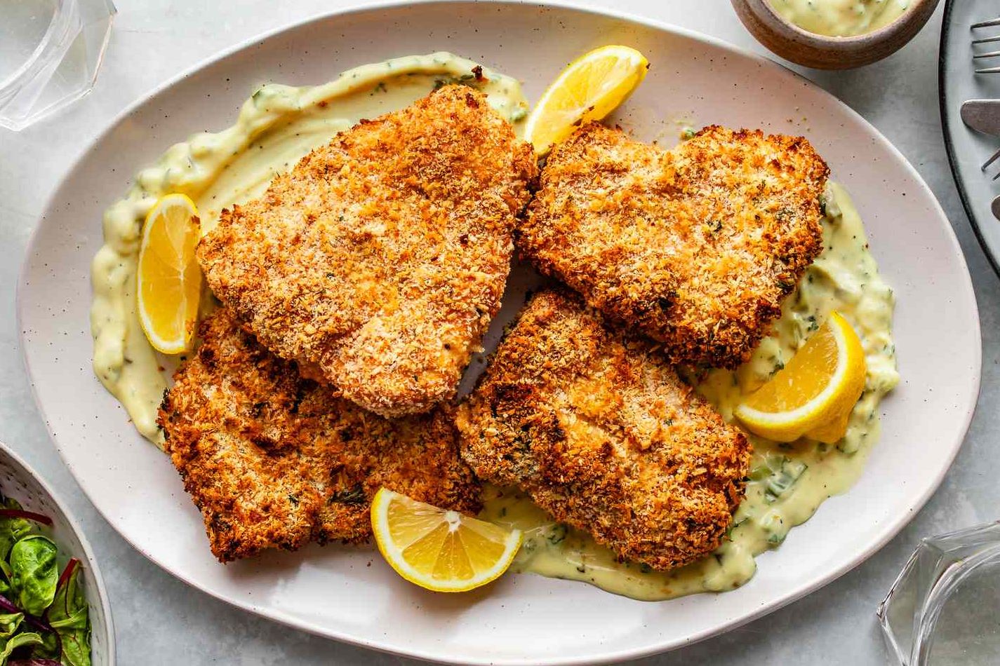
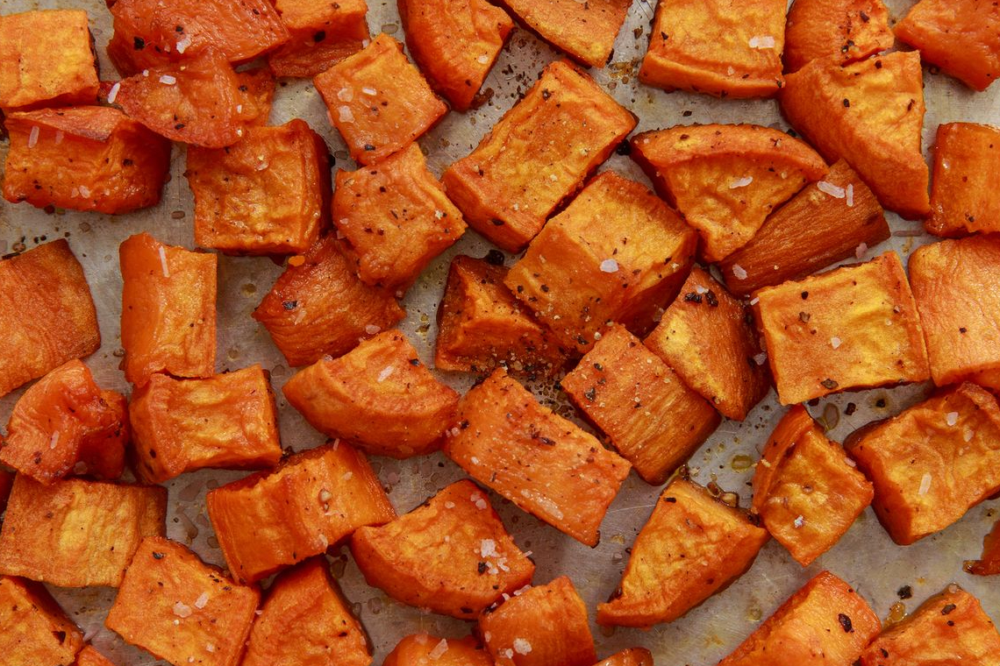
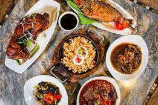
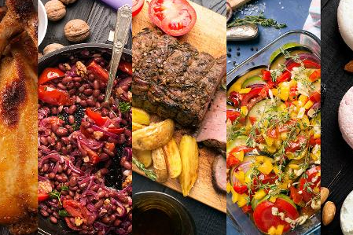
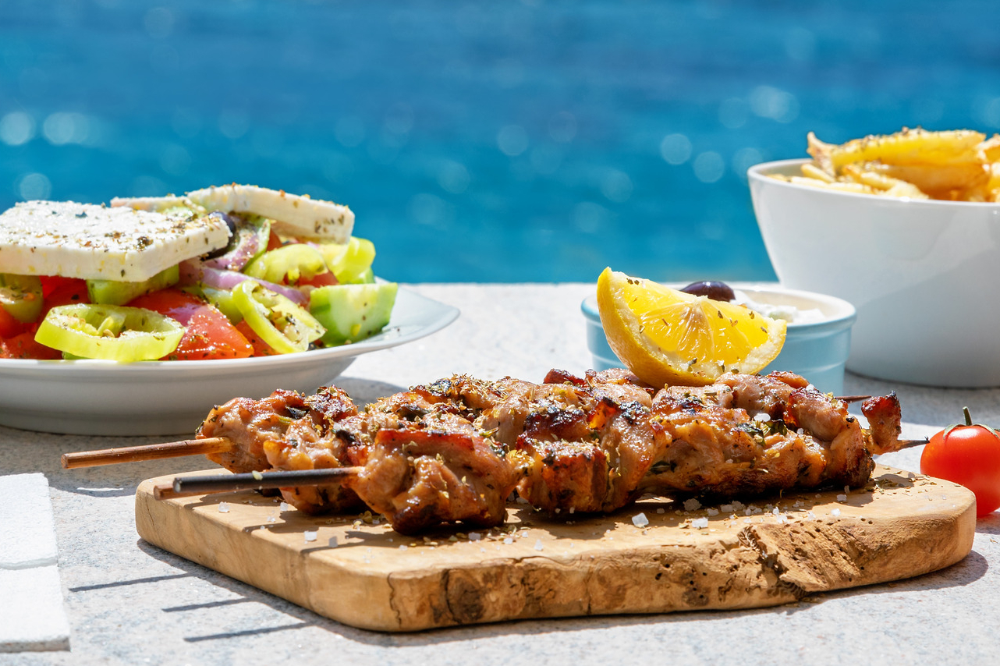
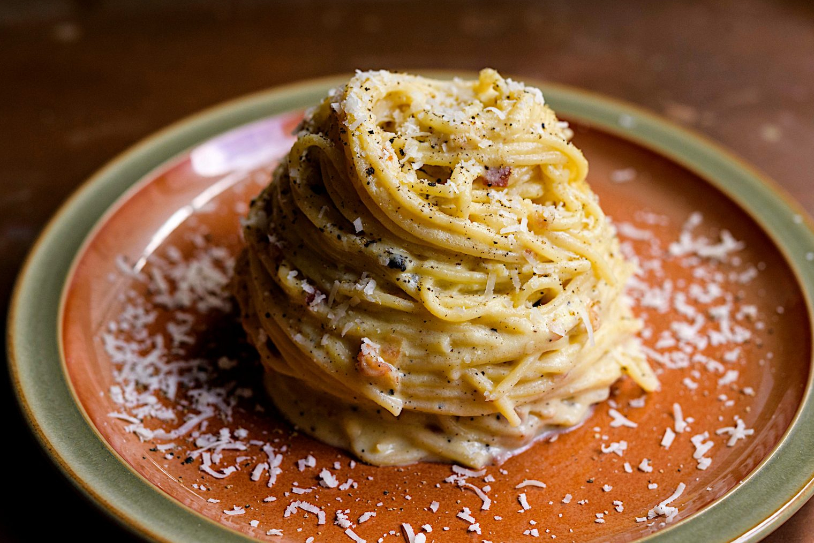
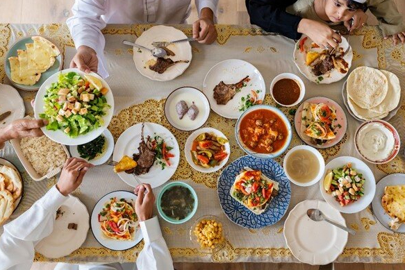

Explore
Tofu
Quinoa
Salmon

Avocado
Ingredients
Steps
Delicious recipes

GARLIC ROSEMARY LAMB CHOPS
Pan-seared until perfectly golden brown with an amazing garlicky, rosemary-thyme marinade. So easy yet so good! 2 HOURS 35 MINUTES

PANKO-CRUSTED BAKED HADDOCK
If you love fried fish but you'd rather not have to deal with the oil and hassle of frying, this delicious baked haddock with a crispy panko crust is the recipe for you. 37 MINUTES

❮
❯
ROASTED SWEET POTATOES
Amazingly crisp-tender sweet potatoes roasted to perfection. Such a quick, easy, vegetarian side dish for any meal! 50 MINUTESFrom Around the World

Filipino Restaurant Month celebrates cuisine and culture in local community
Filipino Restaurant Month
CBC News

The Most Popular International Cuisines on Instagram and TikTok in 2023
Food Trends
CHEF'S PENCIL

Best Mediterranean Cookbooks: Top 5 Culinary Guides Most Recommended By Experts
Best of The Best
Study Finds

Where was Carbonara created? It's a question Italians don't want to hear the answer to
Culture in Food
By Euronews

Flavours beyond borders: a look into culinary staples in Ramadan
Culture in Food
Doha News